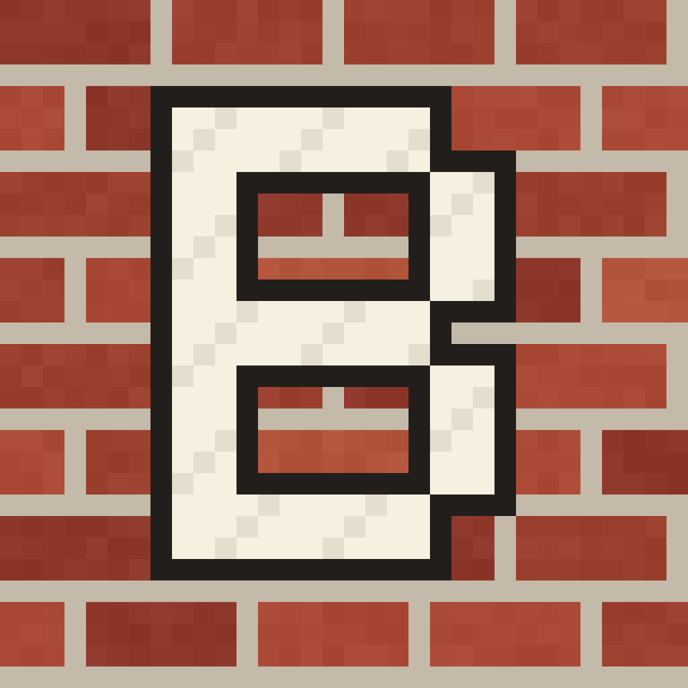

BrickByBrick Uploader
BrickByBrick Uploader is a private tool that the BrickByBrick channel uses to share its own short Minecraft videos. It is not offered to the public and has a single user: the channel owner.
- YouTube: every video is uploaded as private, so the owner can review it in YouTube Studio before deciding whether to publish it. The tool never publishes videos and never changes their privacy setting.
- TikTok: after the owner has published a video on YouTube, the tool can send a copy to the owner's own TikTok account as a draft. The owner reviews and posts it in the TikTok app; the tool never posts directly.